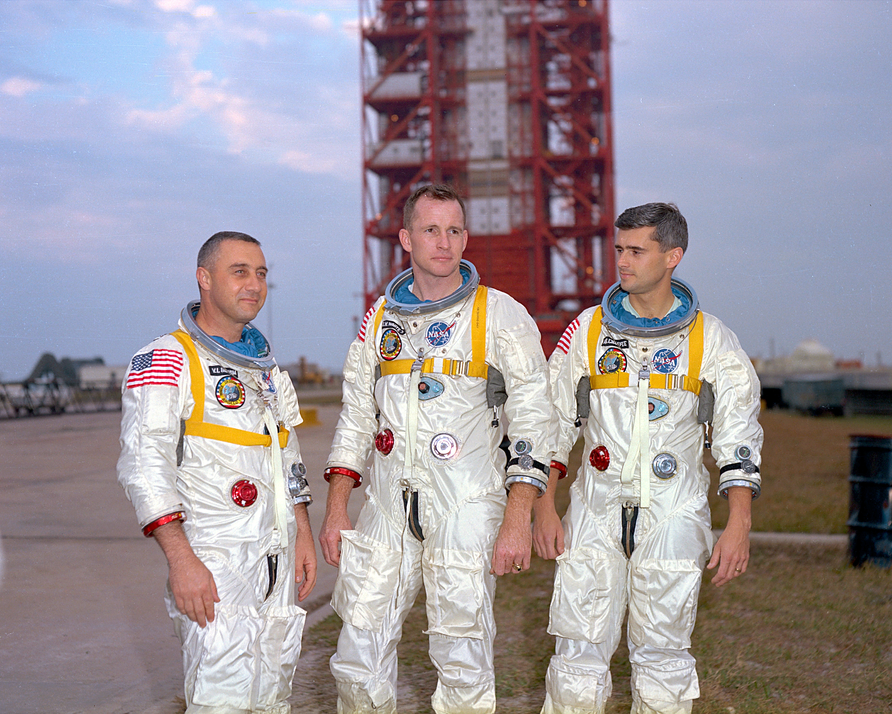

Gus Grissom was one of NASA's original Mercury Seven astronauts and one of the pioneers of American human spaceflight. Before Apollo 1, he became the second American to travel into space during the Mercury-Redstone 4 mission in 1961. He later commanded Gemini 3, the first crewed flight of NASA's Gemini program.
By the time he was selected to command Apollo 1, Grissom was considered one of NASA's most experienced astronauts. He played a major role in the development and testing of spacecraft systems and was highly respected for his technical knowledge and leadership abilities.
Grissom lost his life during the Apollo 1 launch-pad fire on January 27, 1967. His contributions to the Mercury, Gemini, and Apollo programs helped lay the foundation for future Moon landings. Today, he is remembered as one of the most important pioneers of the Space Age.
Ed White was an Air Force pilot and astronaut best known for becoming the first American to perform a spacewalk. During the Gemini 4 mission in 1965, he spent more than twenty minutes outside his spacecraft, demonstrating that astronauts could safely work in the vacuum of space.
White's spacewalk became one of the defining moments of the Gemini program and provided valuable experience for future Apollo missions. He was known among fellow astronauts for his dedication, athleticism, and enthusiasm for space exploration.
White died alongside Grissom and Chaffee during the Apollo 1 fire. His pioneering work during Gemini 4 helped make future lunar missions possible and secured his place among the most influential astronauts in NASA history.
Roger Chaffee was the youngest member of the Apollo 1 crew and was preparing for his first spaceflight. Before joining NASA, he served as a naval aviator and reconnaissance pilot, developing skills that impressed NASA officials during astronaut selection.
Although he never had the opportunity to fly in space, Chaffee played an important role in preparing Apollo spacecraft systems and mission procedures. Colleagues frequently praised his intelligence, professionalism, and attention to detail.
His death at age 31 cut short what many believed would have been an outstanding astronaut career. Chaffee remains remembered as a symbol of dedication and sacrifice within the Apollo program.